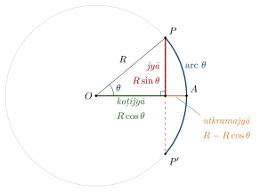

Chapter 3: Āryabhaṭa and the Āryabhaṭīya¶
Āryabhaṭīya, Gītikāpāda 1
praṇipatyaikam anekaṃ kaṃ satyāṃ devatāṃ paraṃ brahma
āryabhaṭas trīṇi gadati gaṇitaṃ kālakriyāṃ golam
“Having bowed to Brahman—who is one and many, the true deity, the supreme—Āryabhaṭa sets out three things: mathematics, the reckoning of time, and the sphere.”
The Āryabhaṭīya, composed in 499 CE, is the oldest Indian astronomical treatise by a named author that survives complete, and the earliest dated Sanskrit text to contain a substantial chapter on mathematics. In 121 verses it sets out a system of astronomy and, in its second section, the arithmetic, geometry, trigonometry and algebra that the astronomer needed. Its rules are extremely compressed, and it became the subject of a long tradition of commentary, beginning with Bhāskara I in 629 CE and continuing in Kerala into the sixteenth century. Through its commentators and its influence on later astronomers, it shaped Indian mathematics for a thousand years (Clark 1930; Shukla and Sarma 1976; Plofker 2009).
3.1 Life and Date¶
Almost everything known about Āryabhaṭa comes from two verses of his own work. In the Kālakriyāpāda (verse 10) he says that when sixty times sixty years and three quarter-ages (yugapāda) had elapsed, twenty-three years of his life had passed. Sixty times sixty years after the beginning of the Kali age is the year 499 CE, so he was born in 476. In the first verse of the Gaṇitapāda he says that he sets out “the knowledge honoured at Kusumapura” (kusumapure ’bhyarcitaṃ jñānam). Bhāskara I identifies Kusumapura with Pāṭaliputra, the old capital of Magadha (modern Patna). Bhāskara I also calls Āryabhaṭa aśmakīya, “of the Aśmaka country”, and his followers āśmakas; the Aśmaka region lay in the Deccan, and whether this refers to his birthplace or to a school is not clear. Later claims that he was born in Kerala, or that he taught at Nālandā, rest on no early evidence (Shukla and Sarma 1976; Plofker 2009).
Āryabhaṭa also wrote a second astronomical work, now lost, which counted the day from midnight rather than sunrise. It is known from Varāhamihira’s Pañcasiddhāntikā, from Bhāskara I, and from Brahmagupta’s Khaṇḍakhādyaka, which adopted its parameters.
3.2 The Structure of the Text¶
The Āryabhaṭīya is written in the āryā metre and has four sections (pāda; Table 3.1):
| Section | Verses | Contents |
|---|---|---|
| Gītikāpāda | 13 | Invocation; the alphabetic numeral notation; the astronomical parameters (revolutions of the planets in a yuga, dimensions of orbits, inclinations); the table of sine differences |
| Gaṇitapāda | 33 | Mathematics: arithmetic, geometry, trigonometry, series, equations, the kuṭṭaka |
| Kālakriyāpāda | 25 | Units of time; planetary motion; the structure of the yuga |
| Golapāda | 50 | The celestial sphere; the earth; eclipses |
The Gītikāpāda uses the gītikā variant of the metre, from which it takes its name. The 121 verses of the whole work are often counted as “108 plus 13”, the 108 verses of the three later sections being treated as the main text. Two editions are standard: W. E. Clark’s English translation (1930), and the critical edition with translation by K. S. Shukla and K. V. Sarma (1976) (Clark 1930; Shukla and Sarma 1976).
3.2.1 A guide to the Gaṇitapāda¶
The 33 verses of the mathematical section cover a wide range of topics in a carefully arranged order. Table 3.2 summarises their contents, following the order of the standard editions; the grouping and the precise numbering of verses differ slightly between editions.
| Verses | Topic |
|---|---|
| 1 | Invocation; the knowledge honoured at Kusumapura |
| 2 | Names of the decimal places; each place ten times the preceding |
| 3–5 | Square and cube; square root and cube root |
| 6–9 | Areas of triangle, circle and trapezium; volumes of tetrahedron and sphere (the last two inexact); the area of any plane figure; the chord of a sixth of the circumference equals the radius |
| 10 | The ratio of circumference to diameter |
| 11–12 | Construction of sines; the rule of sine differences |
| 13 | Geometrical constructions: circle, triangle, quadrilateral; levels and plumb-lines |
| 14–16 | Gnomon and shadow; lamp and gnomon; two gnomons |
| 17–18 | The right triangle; chord and arrow; intersecting circles |
| 19–22 | Arithmetic progressions; number of terms; piles; sums of squares and cubes |
| 23–24 | Product from the square of the sum and the sum of squares; two quantities from their difference and product |
| 25 | Interest on a principal and interest on the interest |
| 26–28 | The rule of three; operations with fractions; inversion |
| 29–31 | Equations: the sum of unknowns; equal wealth; the meeting of moving bodies |
| 32–33 | The pulveriser (kuṭṭaka) |
The order is pedagogical: from numbers and operations, through figures and the circle, to trigonometry, shadows, series, proportion and equations, ending with the pulveriser, the most difficult technique, which the astronomer needed for the reckoning of planetary cycles.
3.3 The Alphabetic Numerals¶
To fit the large numbers of astronomy into a few verses, Āryabhaṭa invented a notation in which syllables stand for numbers (Gītikāpāda 2).
Mathematical Result: Āryabhaṭa’s alphabetic notation
Consonants. The twenty-five “classified” consonants from k to m have the values 1 to 25: k = 1, kh = 2, …, ṅ = 5, c = 6, …, ñ = 10, ṭ = 11, …, ṇ = 15, t = 16, …, n = 20, p = 21, …, m = 25. The eight “unclassified” consonants have the values y = 30, r = 40, l = 50, v = 60, ś = 70, ṣ = 80, s = 90, h = 100.
Vowels. The nine vowels a, i, u, ṛ, ḷ, e, ai, o, au multiply the consonant they follow by \(1, 10^2, 10^4, \ldots, 10^{16}\) respectively.
Example. The number of revolutions of the Sun in a yuga is written khyughṛ (Gītikāpāda 3). Here khyu \(= (2+30)\times 10^4 = 320{,}000\) and ghṛ \(= 4\times 10^6 = 4{,}000{,}000\), so the number is \(4{,}320{,}000\).
The notation can express numbers up to about \(10^{18}\). It is not itself a place-value system—the value of a syllable is fixed by its consonant and vowel, not by its position in the word—but its design, with vowels marking pairs of decimal places, presupposes the decimal place-value system, which Āryabhaṭa used in calculation. The Gaṇitapāda begins (verse 2) by naming the decimal places from eka (units) to vṛnda (\(10^9\)) and stating that each place is ten times the one before it. The notation was not adopted by later authors, who preferred word-numerals and, in Kerala, the kaṭapayādi system.
3.4 Arithmetic: Squares, Cubes and Roots¶
Āryabhaṭa defines the square and the cube, and gives rules for extracting square and cube roots (Gaṇitapāda 4–5). The square-root rule may be paraphrased: divide repeatedly the non-square place by twice the root; subtract the square [of the quotient] from the square place; the quotient is the root in the next place. The places of the number are marked alternately, from the units, as “square” (odd) and “non-square” (even) places. The procedure is the long-division method for square roots once taught in schools, and it works only with numbers written in decimal place value.
Worked example: \(\sqrt{55225}\)
Mark the places from the right: 5 | 52 | 25, so the root has three digits.
-
The largest square not exceeding the leading group 5 is \(2^2=4\). First digit: 2. Remainder \(5-4 = 1\).
-
Bring down the next digit: 15. Divide by twice the root found so far, \(2\times 2=4\): quotient 3, remainder 3. Bring down the next digit: 32. Subtract the square of the quotient, \(3^2=9\): remainder 23. Root so far: 23.
-
Bring down the next digit: 232. Divide by \(2\times 23 = 46\): quotient 5, remainder 2. Bring down the last digit: 25. Subtract \(5^2 = 25\): remainder 0.
So \(\sqrt{55225} = 235\); indeed \(235^2 = 55225\).
Scholarly Note: Why the root rule works
If the root found so far is \(a\) (standing for the higher digits) and the next digit is \(b\), the next approximation is \(10a + b\), and
Having subtracted \(a^2\) in the appropriate places, the remainder must contain \(2 \cdot 10a \cdot b + b^2\). Dividing by twice the root found so far gives \(b\); subtracting \(b^2\) completes the subtraction of \((10a+b)^2\). Each step thus subtracts exactly the square of the root found so far, which is why the remainder is zero when the number is a perfect square. The same reasoning, with \((10a + b)^3 = 1000a^3 + 300a^2b + 30ab^2 + b^3\), underlies Āryabhaṭa’s rule for cube roots. For a larger example, the method gives \(\sqrt{152{,}399{,}025} = 12{,}345\) in five steps.
3.5 The Value of π¶
Āryabhaṭīya, Gaṇitapāda 10
caturadhikaṃ śatam aṣṭaguṇaṃ dvāṣaṣṭis tathā sahasrāṇām
ayutadvayaviṣkambhasyāsanno vṛttapariṇāhaḥ
“One hundred plus four, multiplied by eight, and sixty-two thousand: this is the approximate circumference of a circle whose diameter is twenty thousand.”
The circumference is \((100+4)\times 8 + 62{,}000 = 62{,}832\) for a diameter of \(20{,}000\), so
which is correct to four decimal places (\(\pi = 3.14159\ldots\)). The word āsanna, “near”, marks the value as an approximation. Commentators understood it in this way; Nīlakaṇṭha, a thousand years later, explained that the true ratio cannot be expressed exactly by whole numbers. How Āryabhaṭa obtained his value is not recorded. One modern reconstruction calculates the perimeter of a regular polygon of 384 sides inscribed in the circle: for a diameter of 20,000 it is about 62,831.15, that is \(\pi \approx 3.14156\), which rounds to \(3.1416\). But this is a reconstruction, not a report (Shukla and Sarma 1976; Plofker 2009).
Archimedes, in the third century BCE, had shown by polygons of 96 sides that \(\pi\) lies between \(3\tfrac{10}{71}\) and \(3\tfrac{1}{7}\), and Ptolemy used \(3;8,30 = 3.14167\). Āryabhaṭa’s value was among the best available anywhere in his time, but there is no need to claim more for it than that.
3.6 Trigonometry: The Sine Table¶
3.6.1 From chord to half-chord¶
Hellenistic astronomers, from Hipparchus (2nd century BCE) to Ptolemy (2nd century CE), computed with the chord of an arc. Indian astronomers used instead the half-chord of the double arc, called jyārdha (“half the bowstring”) and later simply jyā or jīvā (“bowstring”). For an arc \(\theta\) in a circle of radius \(R\), the Indian sine is the length
The koṭijyā is \(R\cos\theta\) and the utkramajyā or versed sine is \(R - R\cos\theta\) (Figure 3.1). The names come from archery: the arc is the bow, the full chord its string, and the versed sine, which runs from the middle of the string to the middle of the bow, is also called the “arrow” (śara). The change from chord to half-chord simplified many calculations. The earliest surviving Indian sine tables are those in the Āryabhaṭīya and in the Pauliśasiddhānta summarised by Varāhamihira (6th century). The use of a sine rather than a chord is an Indian development, although the idea of tabulating a trigonometric function for astronomy came to India with Hellenistic astronomy (Chapter 12) (Plofker 2009; Pingree 1981; Van Brummelen 2009).

3.6.2 Āryabhaṭa’s table¶
Āryabhaṭa divides the quadrant into 24 equal parts of \(3^\circ 45' = 225'\) and takes the radius as \(R = 3438'\), the number of minutes of arc in a radian (more exactly \(3437.75'\)). With this choice, the sine of a small arc is almost equal to the arc in the same units: the first sine is \(225\). A verse of the Gītikāpāda gives, in the alphabetic notation, the 24 successive differences of the sines:
which add up to \(3438\). Table 3.3 gives the differences, the sines obtained by adding them, and the modern values.
| \(n\) | Arc | Difference | Āryabhaṭa’s sine | \(3438\sin(n\times 3.75^\circ)\) |
|---|---|---|---|---|
| 1 | \(3^\circ 45'\) | 225 | 225 | 224.86 |
| 2 | \(7^\circ 30'\) | 224 | 449 | 448.75 |
| 3 | \(11^\circ 15'\) | 222 | 671 | 670.72 |
| 4 | \(15^\circ 00'\) | 219 | 890 | 889.82 |
| 5 | \(18^\circ 45'\) | 215 | 1105 | 1105.11 |
| 6 | \(22^\circ 30'\) | 210 | 1315 | 1315.67 |
| 7 | \(26^\circ 15'\) | 205 | 1520 | 1520.59 |
| 8 | \(30^\circ 00'\) | 199 | 1719 | 1719.00 |
| 9 | \(33^\circ 45'\) | 191 | 1910 | 1910.05 |
| 10 | \(37^\circ 30'\) | 183 | 2093 | 2092.92 |
| 11 | \(41^\circ 15'\) | 174 | 2267 | 2266.83 |
| 12 | \(45^\circ 00'\) | 164 | 2431 | 2431.03 |
| 13 | \(48^\circ 45'\) | 154 | 2585 | 2584.83 |
| 14 | \(52^\circ 30'\) | 143 | 2728 | 2727.55 |
| 15 | \(56^\circ 15'\) | 131 | 2859 | 2858.59 |
| 16 | \(60^\circ 00'\) | 119 | 2978 | 2977.40 |
| 17 | \(63^\circ 45'\) | 106 | 3084 | 3083.45 |
| 18 | \(67^\circ 30'\) | 93 | 3177 | 3176.30 |
| 19 | \(71^\circ 15'\) | 79 | 3256 | 3255.55 |
| 20 | \(75^\circ 00'\) | 65 | 3321 | 3320.85 |
| 21 | \(78^\circ 45'\) | 51 | 3372 | 3371.94 |
| 22 | \(82^\circ 30'\) | 37 | 3409 | 3408.59 |
| 23 | \(86^\circ 15'\) | 22 | 3431 | 3430.64 |
| 24 | \(90^\circ 00'\) | 7 | 3438 | 3438.00 |
The tabulated values never differ from the modern values by more than about one unit. Āryabhaṭa describes a geometrical construction of the sines (Gaṇitapāda 11), using the facts that the chord of a sixth of the circle equals the radius (so that the sine of \(30^\circ\) is \(R/2\)) and that the sine of half an arc can be found from the sine and versed sine of the whole arc. Repeated halving from \(30^\circ\) and \(45^\circ\) gives the sines of \(15^\circ\), \(7^\circ 30'\), \(3^\circ 45'\), \(22^\circ 30'\), \(11^\circ 15'\) and so on.
3.6.3 The rule of sine differences¶
He also gives an arithmetical rule (Gaṇitapāda 12) for computing each difference from the preceding ones. Writing \(\Delta_n\) for the \(n\)-th difference and \(S_n = \Delta_1 + \cdots + \Delta_n\) for the \(n\)-th sine, the rule is
Thus \(\Delta_2 = 225 - 225/225 = 224\), \(\Delta_3 = 224 - 449/225 \approx 222\), \(\Delta_4 = 222 - 671/225 \approx 219\). The rule expresses the fact that the second differences of the sine are proportional to the sine itself with a negative sign: in modern terms
and Āryabhaṭa’s divisor 225 corresponds to taking \(2(1-\cos h) \approx 1/225\), whereas the exact value for \(h = 3^\circ 45'\) is about \(1/233.5\). Applied mechanically, the rule therefore drifts: by the end of the quadrant it gives differences several units too small. The values in the Gītikāpāda table are better than the rule alone would give, and commentators discussed how the rule should be applied. This relation between second differences and the function itself is the starting point of the much later Kerala work on the sine series (Chapter 6) (Plofker 2009; Van Brummelen 2009).
Scholarly Note: Where the rule comes from
Write \(S_n = R\sin(nh)\) with \(h = 225'\). The addition rule for sines gives
so that
With \(h = 225' = 0.06545\) radian, \(2(1 - \cos h) \approx h^2 = 0.004284 = 1/233.5\). If the arc \(h\) is identified with its sine, \(225\), and the radius with \(3438\), then \(h^2 \approx 225^2/3438^2 \approx 1/233.5\), which is the true factor. Āryabhaṭa’s divisor \(\Delta_1 = 225\) corresponds to \(1/225\) and makes the decrease of the differences a little too fast. Whatever the origin of the simplification, the rule captures the essential property of the sine: its second differences are proportional to the sine itself, with the opposite sign.
Scholarly Note: The word “sine”
The Sanskrit jīvā was borrowed into Arabic as jība, a word with no meaning in Arabic. Written without vowels as jb, it was later read as jayb, “pocket, fold”. Twelfth-century translators from Arabic into Latin rendered jayb by its Latin equivalent sinus, from which the English “sine” comes.
3.7 Series¶
The Gaṇitapāda gives rules for arithmetic progressions (verses 19–20): the sum of \(n\) terms with first term \(a\) and common difference \(d\),
and the inverse rule for finding the number of terms from the sum, which requires the solution of a quadratic equation:
It then gives three sums of series (verses 21–22):
The first arises from counting the balls in a triangular pile, a typical “determination” of piles (citi).
Scholarly Note: Why the sums are correct
Āryabhaṭa gives no justification, but later commentators did, and the results can be checked simply. For the sum of squares, observe that \((k+1)^3 - k^3 = 3k^2 + 3k + 1\); adding these equations for \(k = 1, \ldots, n\), the left side collapses to \((n+1)^3 - 1\), so
which gives \(\sum k^2 = \tfrac{n(n+1)(2n+1)}{6}\). For the cubes, the \(n\)-th triangular number \(T_n = \tfrac{n(n+1)}{2}\) satisfies \(T_n^2 - T_{n-1}^2 = (T_n - T_{n-1})(T_n + T_{n-1}) = n \cdot n^2 = n^3\); adding these for \(n = 1, 2, \ldots\) gives \(\sum k^3 = T_n^2\). The “pile” sum follows by adding the triangular numbers, \(\sum T_k = \tfrac12\left(\sum k^2 + \sum k\right)\).
The identity for the sum of cubes was also known to Nicomachus of Gerasa (c. 100 CE) in another form. For example, \(1^3+2^3+3^3+4^3+5^3 = 225 = 15^2\).
3.8 Geometry¶
Āryabhaṭa’s geometrical rules include some that are exact and some that are not. The verse on the triangle and the tetrahedron illustrates both:
Āryabhaṭīya, Gaṇitapāda 6
tribhujasya phalaśarīraṃ samadalakoṭībhujārdhasaṃvargaḥ
ūrdhvabhujātatsaṃvargārdhaṃ sa ghanaḥ ṣaḍaśrir iti
“The area of a triangle is the product of the perpendicular and half the base. Half the product of that [area] and the upward side [the height] is the solid called ‘six-edged’.”
The first half is the correct rule \(A = \tfrac{1}{2}bh\). The second gives the volume of a tetrahedron as half the product of base area and height; the correct factor is one third. Similarly, the next verse gives the area of a circle correctly, as half the circumference times half the diameter, but then states that this area multiplied by its own square root is the volume of the sphere. That rule gives \((\pi r^2)^{3/2} \approx 5.57\,r^3\) instead of \(\tfrac{4}{3}\pi r^3 \approx 4.19\,r^3\). Modern editors, including Shukla and Sarma, accept that these two rules are simply wrong; attempts to read the sphere rule as the correct formula are not convincing (Shukla and Sarma 1976; Plofker 2009).
Other rules are correct: the area of a trapezium; the property that in a circle the product of the two segments of a diameter equals the square of the half-chord perpendicular to it; the rule of the right triangle (the square of the hypotenuse equals the sum of the squares of the sides); and rules for shadows cast by a gnomon from a lamp. If a lamp stands at height \(h\), and a gnomon of height \(g\) stands at distance \(d\) from it, the shadow has length \(s = gd/(h-g)\).
3.9 Equations and the Kuṭṭaka¶
Several verses of the Gaṇitapāda solve equations: two quantities from their difference and product (a quadratic problem); the unknown principal from the interest on it and the interest on that interest (again quadratic); the value of an unknown from an equation in which unknowns appear on both sides; and the time at which two moving bodies meet.
The last two verses (32–33) contain Āryabhaṭa’s most original algebraic contribution: a method for solving linear indeterminate problems, which his commentators called kuṭṭaka, “pulveriser”. The problem is to find a number \(N\) which, divided by a given number \(a\), leaves remainder \(r_1\), and divided by \(b\), leaves remainder \(r_2\). That is, find whole numbers \(x, y\) with
Āryabhaṭa’s procedure divides the two divisors mutually, as in the Euclidean algorithm, writes the quotients in a column, and then works back up the column to build a solution. The name refers to the way the large numbers are “pulverised” into small ones. Bhāskara I’s commentary explains the rule with many examples, and later authors refined it (Shukla 1976; Keller 2006).
Worked example: \(137x - 60y = 10\)
Mutual division of 137 and 60:
The quotients are 2, 3, 1, 1, and the last remainder is 1, so a solution exists for any right-hand side.
Working back (in modern form): \(1 = 9 - 8 = 2\cdot 9 - 17 = 2\cdot 60 - 7\cdot 17 = 16\cdot 60 - 7\cdot 137\). Hence \(137\cdot(-7) - 60\cdot(-16) = 1\), and multiplying by 10, \(137\cdot(-70) - 60\cdot(-160) = 10\).
Reducing \(-70\) modulo 60 gives \(x = 50\), and then \(y = (137\cdot 50 - 10)/60 = 114\).
Check: \(137 \times 50 = 6850 = 60 \times 114 + 10\). The general solution is \(x = 50 + 60t\), \(y = 114 + 137t\).
Scholarly Note: Why the pulveriser works
In modern terms, mutual division replaces the pair \((a, b)\) by \((b, a - qb)\) at each step; every number that can be written as \(ax - by\) with whole numbers \(x, y\) can also be written in terms of the new pair, and conversely. At the end the pair contains the greatest common divisor \(g\) of \(a\) and \(b\), and working back expresses \(g\) itself as \(ax_0 - by_0\). The equation \(ax - by = c\) is therefore solvable exactly when \(g\) divides \(c\), and one solution is \(x = x_0 c/g\), \(y = y_0 c/g\). If \((x, y)\) is one solution, all others are \(\left(x + \tfrac{b}{g}t,\ y + \tfrac{a}{g}t\right)\) for whole numbers \(t\), which is why the Indian authors could reduce any solution to the smallest positive one by subtracting multiples of \(b/g\). The Indian procedure keeps track of the quotients in a column (vallī) and computes the solution from the bottom of the column upward; it also allows the solver to choose a convenient multiplier at the last step, a freedom that later authors exploited to shorten the work.
A remainder problem
Find the smallest number which leaves remainder 5 when divided by 8 and remainder 4 when divided by 9.
The number is \(N = 8x + 5 = 9y + 4\), so \(9y - 8x = 1\). Mutual division of 9 and 8 gives \(9 = 1\cdot 8 + 1\), so \(9\cdot 1 - 8\cdot 1 = 1\), that is \(x = 1\), \(y = 1\). Then \(N = 8 + 5 = 13\), and indeed \(13 = 9 + 4\). All other solutions differ from 13 by multiples of \(8 \times 9 = 72\): \(85\), \(157\), and so on.
Problems of this kind arise in astronomy when one asks, for example, how many days must elapse for planets with given numbers of revolutions in a yuga to reach given positions; Bhāskara I gives such astronomical examples. The method is the same as the one now taught as the extended Euclidean algorithm. Euclid’s Elements (VII.1–2) had used mutual division to find the greatest common divisor, and Chinese mathematicians solved simultaneous remainder problems (Sunzi, perhaps 3rd–5th century; Qin Jiushao, 1247). Āryabhaṭa’s text is the earliest known to give a general method for linear indeterminate equations in integers (Plofker 2009; Datta and Singh 1935).
3.10 Further Worked Examples from the Gaṇitapāda¶
The rules of the Gaṇitapāda are stated without examples; the examples below follow the rules as explained by Bhāskara I and later commentators, with numbers chosen for illustration.
Number of terms of a progression (verse 20)
A series begins with 5 and increases by 3 at each step. How many terms give a sum of 98?
With \(a = 5\), \(d = 3\), \(S = 98\), the rule gives
Check: \(5 + 8 + 11 + 14 + 17 + 20 + 23 = 98\).
Interest on interest (verse 25)
A principal of 100 is lent for one month at an unknown monthly interest. That interest is then lent out for 6 months at the same rate. The interest received in the first month together with the interest on that interest amounts to 16. What was the monthly interest?
Āryabhaṭa’s rule, in modern form, gives the monthly interest as
where \(P = 100\) is the principal, \(t = 6\) the time and \(m = 16\) the combined amount:
Check: the first month’s interest is 10; lent for 6 months at 10 per 100 per month, it earns \(6\); and \(10 + 6 = 16\). The problem leads to the quadratic \(t x^2 + P x = P m\), and the rule is its solution.
Equal wealth (verse 30)
Two merchants are equally rich. One has 7 horses and 100 coins, the other 9 horses and 40 coins. What is the price of a horse?
Āryabhaṭa’s rule: divide the difference of the coins by the difference of the objects. The price is \((100 - 40)/(9 - 7) = 30\), and each merchant has \(7\cdot 30 + 100 = 9\cdot 30 + 40 = 310\).
Two intersecting circles (verse 18)
Two circles with diameters \(D_1\) and \(D_2\) overlap, and the width of the overlap along the line of centres (the “bite”, grāsa) is \(g\). The common chord divides the overlap into two arrows, \(a_1\) in the first circle and \(a_2\) in the second. Āryabhaṭa’s rule gives
With \(D_1 = 10\), \(D_2 = 6\) and \(g = 2\): \(a_1 = \tfrac{2\cdot 4}{12} = \tfrac23\) and \(a_2 = \tfrac{2 \cdot 8}{12} = \tfrac43\), which add up to the bite, 2. The rule follows from the chord-and-arrow relation: the half-chord squared equals \(a_1(D_1 - a_1)\) and also \(a_2(D_2 - a_2)\), and both equal \(\tfrac{56}{9}\) here. The problem arises in eclipses, where the discs of the Sun or Moon and the shadow overlap.
A lamp and two gnomons (verse 16)
Two gnomons of the same height stand in line with a lamp-post. The tip of the shadow of the first is at a distance \(s_1\) from its foot, that of the second at \(s_2\), and the distance between the tips of the two shadows is \(e\). Āryabhaṭa’s rule gives the distance from the tip of the first shadow to the foot of the lamp-post as \(s_1 e/(s_2 - s_1)\).
For example, with \(s_1 = 10\), \(s_2 = 15\) and \(e = 25\), the distance is \(10 \cdot 25 / 5 = 50\). The rule follows from similar triangles, since the shadows increase in proportion to the distance from the lamp.
3.11 The Astronomical Parameters¶
The Gītikāpāda gives the numbers of revolutions of the planets in a yuga of 4,320,000 years. Some of the values, in the forms usually given in modern editions, are listed in Table 3.4.
| Body | Revolutions in 4,320,000 years |
|---|---|
| Sun | 4,320,000 |
| Moon | 57,753,336 |
| Rotations of the earth | 1,582,237,500 |
| Saturn | 146,564 |
| Jupiter | 364,224 |
| Mars | 2,296,824 |
These integers encode the mean motions, and simple arithmetic recovers the basic periods.
Worked example: the year and the month
The number of civil days in a yuga is the number of rotations of the earth less the number of revolutions of the Sun: \(1{,}582{,}237{,}500 - 4{,}320{,}000 = 1{,}577{,}917{,}500\). Dividing by the number of years gives the length of the sidereal year:
The number of synodic months is the number of revolutions of the Moon less those of the Sun, \(53{,}433{,}336\), so the mean synodic month is
very close to the modern value of \(29.53059\) days. The synodic period of Jupiter and Saturn—the interval between their conjunctions—is \(4{,}320{,}000/(364{,}224 - 146{,}564) \approx 19.85\) years.
Worked example: a mean position
The mean position of a planet is found by the rule of three: as the number of civil days in a yuga is to the number of revolutions in a yuga, so the number of days elapsed since the epoch (the ahargaṇa) is to the number of revolutions completed. For the Sun, after \(1{,}000{,}000\) days,
The whole revolutions are discarded, and the fraction \(0.7857\ldots\) of a revolution gives the mean longitude: \(0.7857 \times 360^\circ \approx 282^\circ 52'\). For the Moon, after \(10{,}000\) days, \(10{,}000 \times 57{,}753{,}336 / 1{,}577{,}917{,}500 = 366.0099\) revolutions, so the mean Moon has advanced \(0.0099 \times 360^\circ \approx 3^\circ 33'\) beyond the starting point. In practice the astronomer worked with whole numbers and remainders, not decimals, and the kuṭṭaka was used for the reverse problem: to find the number of days from a given remainder.
Such computations, and the problem of finding the number of days elapsed from the observed positions of the planets, are what made the kuṭṭaka and the arithmetic of large numbers central to Indian astronomy.
3.12 Astronomy: A Rotating Earth¶
Āryabhaṭa’s astronomy is geocentric: the Sun, Moon and planets move around a spherical earth at the centre, each according to a model of mean motion corrected by epicycles. Within this framework he made one notable departure from the views of his contemporaries. In the Golapāda (verse 9) he compares the apparent westward motion of the stars to the way a man in a moving boat sees the trees on the bank moving backwards, and explains the daily motion of the heavens by the rotation of the earth on its axis.
Most later Indian astronomers, including Varāhamihira and Brahmagupta, rejected this idea, and some of Āryabhaṭa’s own commentators reinterpreted the verse. The rotation of the earth had also been proposed in Greece, by Heraclides of Pontus in the fourth century BCE, and like Āryabhaṭa’s view it did not prevail. It is a distinctive and interesting position in the history of astronomy, but it is not heliocentrism, and it should not be presented as an anticipation of Copernicus. Āryabhaṭa also explained eclipses correctly as caused by the shadow of the earth falling on the Moon and by the Moon covering the Sun (Golapāda 37). The astronomy of the Āryabhaṭīya is treated in Volume 12 of this series.
3.13 The Commentators¶
Because the Āryabhaṭīya is so concise, it was read with commentaries. The tradition of Āryabhaṭa’s followers (the āryapakṣa) was strongest in South India, especially Kerala. Table 3.5 lists the principal commentaries.
| Commentator | Date | Notes |
|---|---|---|
| Prabhākara | before 629 | Known only from references; lost |
| Bhāskara I | 629 | The earliest surviving commentary; explanations, diagrams and many worked examples |
| Someśvara | c. 11th c. (uncertain) | Largely based on Bhāskara I |
| Sūryadeva Yajvan | b. 1191 | Bhaṭaprakāśikā; South India |
| Parameśvara | c. 1360–1455 | Bhaṭadīpikā; Kerala |
| Nīlakaṇṭha Somayājī | c. 1500 | Āryabhaṭīyabhāṣya; extensive discussion of the Kerala school’s results |
Bhāskara I’s commentary deserves special mention. It is the oldest surviving prose commentary on a mathematical text in Sanskrit. Bhāskara I explains each rule, discusses alternative readings, proves rules by reference to figures that the student was expected to draw, and adds sets of solved examples. Agathe Keller’s translation and study of his commentary on the Gaṇitapāda has shown how much it reveals about the way mathematics was taught and justified in the seventh century, including the role of diagrams and of the “seed” (bīja), the underlying idea from which a rule can be derived (Keller 2006; Shukla 1976).
3.13.1 How a commentary works¶
A look at the structure of Bhāskara I’s commentary shows how mathematics was taught. For each verse he first explains the words, often splitting compounds and supplying the terms that the verse leaves implicit. He then states the meaning of the rule, sometimes discussing alternative interpretations and rejecting those he thinks wrong. Next come one or more example problems (udāharaṇa), usually in verse; for each, the data are “set down” (nyāsa) in a conventional arrangement, the computation is carried out step by step, and the answer is sometimes checked by working backwards. Where a rule concerns figures, he describes the diagram to be drawn and argues from it. Finally he may add remarks on related rules or on the opinions of other teachers.
This pattern—gloss, explanation, example, setting down, solution, verification—recurs in later commentaries and shows that the terse verses of the base text were only one part of a teaching tradition in which calculation, explanation and justification all had a place (Keller 2006).
3.14 Influence Beyond India¶
Parameters and methods from the Āryabhaṭīya and from Āryabhaṭa’s lost midnight system passed into Arabic astronomy through the translations of the eighth century, where the author’s name appears in forms such as Arjabhar, and al-Bīrūnī (c. 1030) discussed his views. The routes by which Indian astronomy and its sine table reached Baghdad, Tang China and Southeast Asia are traced in Chapter 12 (Plofker 2009; Pingree 1981).
3.15 Assessment¶
The Āryabhaṭīya is the earliest surviving Indian text in which mathematics appears as a systematic body of rules: place value, roots, plane and solid figures, the sine table and its construction, series, quadratic problems and the general solution of linear indeterminate equations. Some rules are inaccurate, as with the volumes of the tetrahedron and the sphere; others, such as the value of \(\pi\), the sine table and the kuṭṭaka, are of lasting importance. Its greatest historical significance lies perhaps in the tradition it started: through Bhāskara I, the Kerala astronomers and many others, its rules were explained, tested and extended for more than a thousand years (Plofker 2009; Keller 2006). India’s first satellite, launched in 1975, was named after him.
Exercises¶
-
In Āryabhaṭa’s alphabetic notation, what are the values of the syllables ga, gi, khi and ku?
-
Extract the square root of 1369 by Āryabhaṭa’s method.
-
Find \(1^3 + 2^3 + \cdots + 20^3\) by Āryabhaṭa’s rule, and the number of balls in a triangular pile with 10 layers.
-
Solve \(23x - 17y = 3\) in positive integers by mutual division, giving the smallest solution.
-
Find the smallest number that leaves remainder 1 when divided by 5 and remainder 2 when divided by 7.
-
A lamp stands on a post 9 units high. A gnomon 3 units high stands 12 units from the post. How long is its shadow?
-
From Table 3.4, compute the number of civil days in a yuga and the length of the year.
Answers. (1) \(3\), \(300\), \(200\), \(10{,}000\). (2) 37. (3) \(210^2 = 44{,}100\); \(10\cdot 11\cdot 12/6 = 220\). (4) \(x = 9\), \(y = 12\) (check: \(207 - 204 = 3\)); in general \(x = 9 + 17t\). (5) 16. (6) \(3 \times 12/(9-3) = 6\) units. (7) \(1{,}577{,}917{,}500\) days; \(365.25868\) days.
Scholarly Note: Further reading
Clark (1930) gives a readable English translation; Shukla and Sarma (1976) give the critical text, translation and notes; Keller (2006) translates and studies Bhāskara I’s commentary on the Gaṇitapāda; Plofker (2009), chapter 4, places the work in context (Clark 1930; Shukla and Sarma 1976; Keller 2006; Plofker 2009).